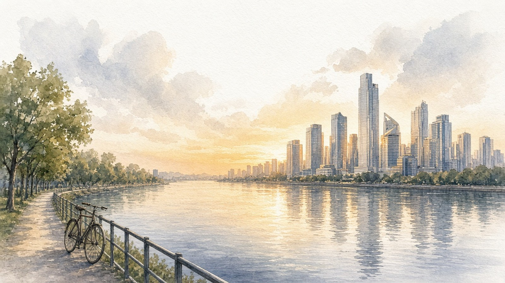

Lobsyhoger onderwijs
Lobsyhoger onderwijsHbo Verpleegkunde · jaar 3K7R-M2D
Lobsyhoger onderwijs
Zorgzaam en rustig. Wil weten hoe het zit en legt rustig uit.
Je werkt rustig en zorgvuldig en houdt het overzicht, ook als het op de afdeling druk wordt. Je krijgt energie van mensen helpen en van dingen helder uitleggen. Werk moet voor jou betekenis hebben. Je voelt je het best in een vast team met duidelijke afspraken.
Je werkt stap voor stap en houdt overzicht, ook als het druk is.
Je krijgt energie van mensen helpen en dingen helder uitleggen.
Je wilt weten dat je werk verschil maakt voor iemand.
Je komt tot je recht met duidelijke afspraken en collega's om je heen.
 Werkstijl
Werkstijl Drijfveren
Drijfveren Pauze
Pauze Waarden
Waarden Werkomgeving
Werkomgeving